Proyecto 03: SGSI ProAmpac basado en ISO/IEC 27001:2022
Contenido del proyecto integrado directamente en el sitio web mediante apartados, tablas, matrices, evidencias y recursos visuales con colores corporativos ProAmpac.
Acerca de ProAmpac
ProAmpac es una empresa global líder en empaques flexibles, con una amplia oferta de productos, soluciones innovadoras, servicio al cliente de clase mundial y desarrollos premiados para un mercado global diverso.
La empresa impulsa el futuro del empaque flexible mediante colaboración con clientes, proveedores y expertos de empaque para acelerar el desarrollo de tecnologías avanzadas, mejorar la personalización y diferenciar productos en el mercado.
ProAmpac también forma parte de PPC, firma enfocada en empresas del mercado medio con presencia en productos manufacturados y servicios. PPC desarrolla compañías con visión de largo plazo y es signataria de los Principios para la Inversión Responsable de Naciones Unidas.
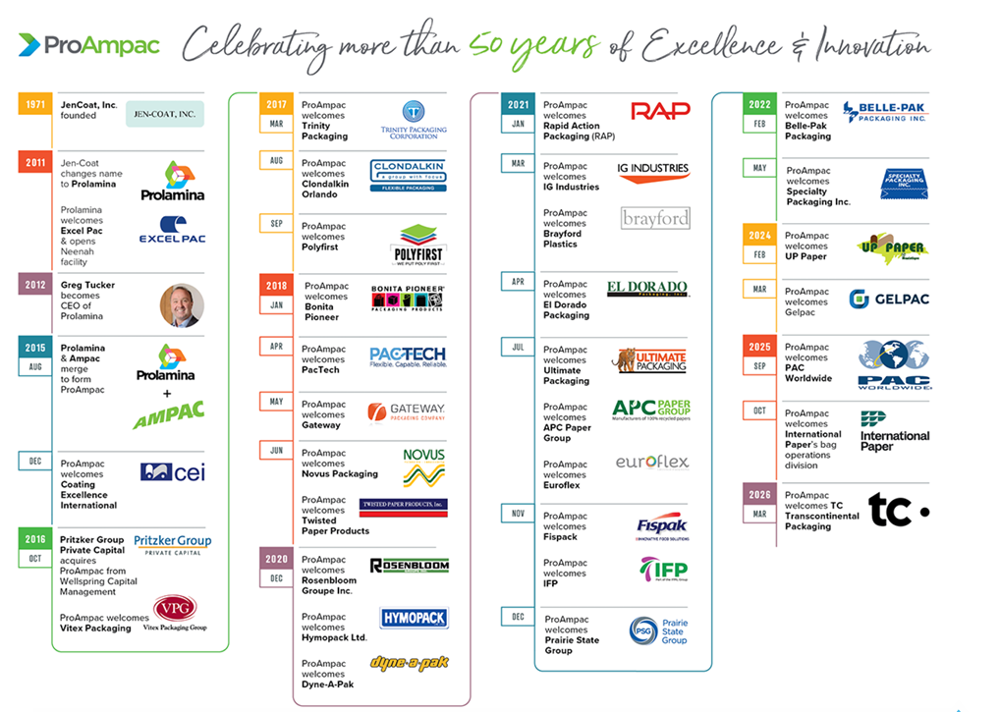
Proveer soluciones de empaque flexible innovadoras y sostenibles, generando valor para clientes globales mediante tecnología avanzada, colaboración y excelencia operativa.
Ser líder global en soluciones de empaque flexible, impulsando la innovación, sostenibilidad y diferenciación en el mercado.
Integridad: hacer lo correcto. Intensidad: superar límites. Involucramiento: trabajar como un solo equipo. Impacto: generar resultados significativos para comunidades, medio ambiente y negocio.
Lo que hacemos y organización
ProAmpac desarrolla empaques flexibles mediante procesos como extrusión y laminación, extrusión de película soplada, perforado y rayado, fabricación de papel reciclado, tapas, etiquetas sensibles a presión, bolsas prefabricadas, impresión y gráficos internos.
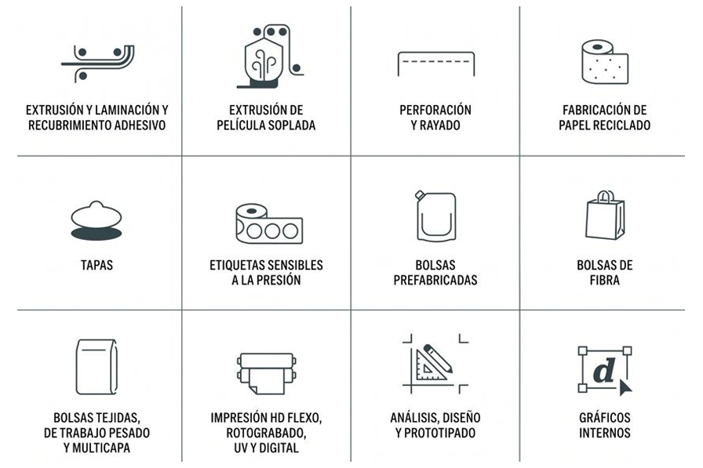
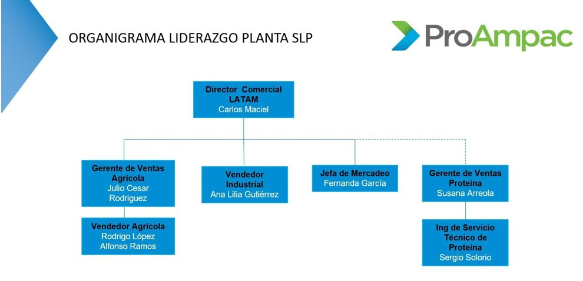
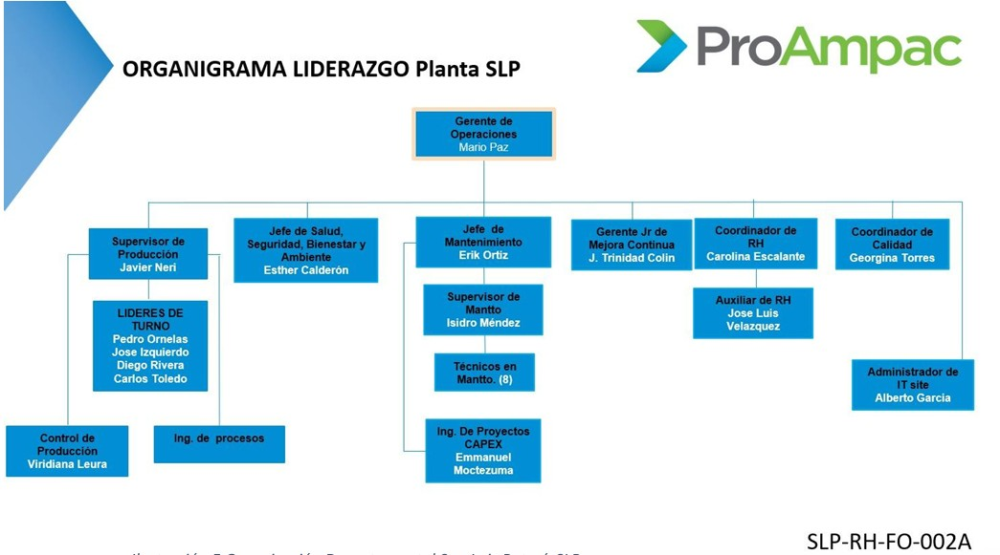
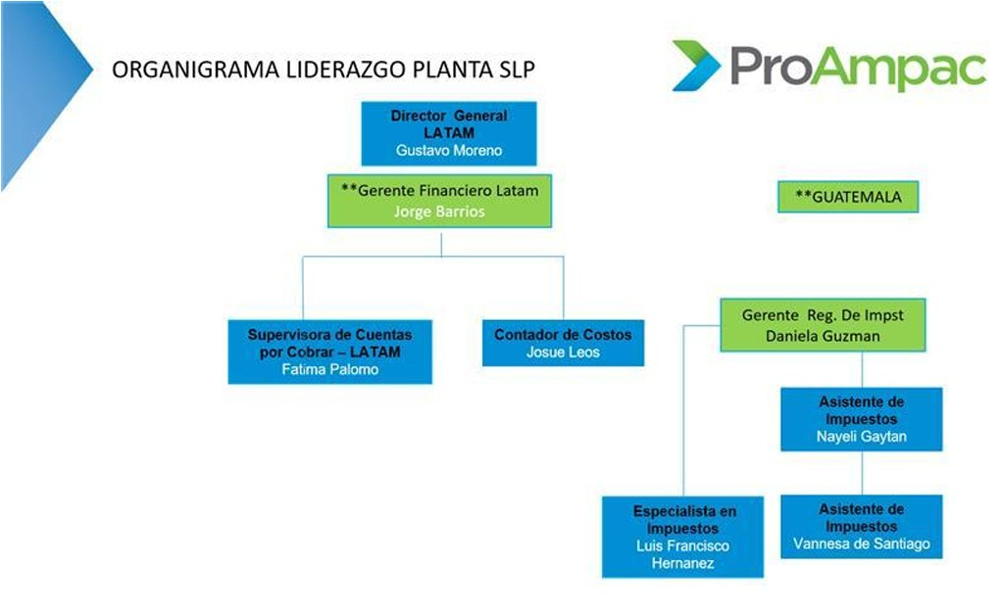
1. Alcance
El SGSI se delimita al área de Investigación y Desarrollo (R&D) de ProAmpac Planta San Luis, enfocado en proteger la información generada, procesada y almacenada durante el desarrollo de productos de empaque flexible.
Comprende diseño, formulación, validación y optimización de productos, así como documentación técnica: hojas técnicas, especificaciones, estándares de empaque y TAMUs. Incluye pruebas y validación de materiales, soporte técnico a producción, mejora continua e innovación.
El alcance considera plataformas digitales como SharePoint, bases de datos de formulaciones, controles de acceso, permisos, trazabilidad, personal de R&D y relación con producción, calidad, compras y comercial. El objetivo es garantizar confidencialidad, integridad y disponibilidad, mitigando accesos no autorizados, alteraciones, pérdida o uso inapropiado.
2. Referencias normativas
| Norma | Documento | Aplicación al SGSI |
|---|---|---|
| ISO/IEC 27000:2022 | Information Security, Cybersecurity and Privacy Protection — Information Security Management Systems — Overview and Vocabulary | Conceptos fundamentales, principios y vocabulario oficial utilizados en el SGSI. |
| ISO/IEC 27001:2022 | Information Security Management Systems — Requirements | Norma principal para establecer, implementar, mantener y mejorar continuamente el SGSI. |
| ISO/IEC 27002:2022 | Information Security Controls | Buenas prácticas y lineamientos para seleccionar, implementar y gestionar controles. |
| ISO/IEC 27005:2022 | Information Security Risk Management | Directrices para identificar, analizar, evaluar y tratar riesgos. |
| ISO/IEC 27017:2015 | Code of Practice for Information Security Controls Based on ISO/IEC 27002 for Cloud Services | Controles adicionales para nube, relevantes en Microsoft 365, OneDrive y SharePoint. |
| ISO/IEC 27018:2019 | Protection of Personally Identifiable Information (PII) in Public Clouds | Lineamientos para proteger datos personales en nube pública. |
| ISO/IEC 27701:2019 | Privacy Information Management System (PIMS) | Extensión orientada a privacidad y protección de datos personales. |
| ISO 22301:2019 | Business Continuity Management Systems — Requirements | Continuidad del negocio y recuperación ante desastres. |
| ISO/IEC 27035-1:2023 | Information Security Incident Management | Gestión de incidentes: detección, respuesta y recuperación. |
| ISO/IEC 27004:2016 | Information Security Management — Monitoring, Measurement, Analysis and Evaluation | Medición de efectividad mediante indicadores y métricas. |
| ISO/IEC 27031:2011 | Guidelines for ICT Readiness for Business Continuity | Continuidad de infraestructura tecnológica y servicios críticos. |
| ISO/IEC 27033-1:2015 | Network Security | Seguridad de redes, segmentación, firewalls y comunicaciones. |
| ISO/IEC 27040:2015 | Storage Security | Protección de almacenamiento y respaldo de información. |
3. Términos y definiciones
Conforme a ISO/IEC 27001:2022, el proyecto toma como base ISO/IEC 27000:2022 para el vocabulario oficial del SGSI.
| Término | Definición | Aplicación ProAmpac Planta SLP |
|---|---|---|
| Control de acceso | Medios para asegurar que el acceso a los activos está restringido a personas autorizadas basándose en requerimientos de negocio y seguridad. | Gestión de permisos en SharePoint, acceso a LAN/WiFi y autenticación en cuentas. |
| Activo de información | Conocimiento o datos que tienen valor para la organización. | ERP, diseños de empaques, know-how técnico y configuraciones de PLCs. |
| Riesgo | Efecto de la incertidumbre sobre los objetivos de confidencialidad, integridad y disponibilidad. | Pérdida de datos críticos o interrupción de línea de producción por fallos en TI. |
| Evaluación de riesgo | Proceso global de identificación, análisis y valoración de riesgos. | Análisis de amenazas sobre servidores físicos y estaciones de R&D. |
| Alta dirección | Persona o grupo que dirige y controla una organización al más alto nivel. | Gerencia de planta responsable de asignar presupuesto para firewalls y respaldos. |
| Confidencialidad | Propiedad de que la información no se revele a entidades no autorizadas. | Protección de patentes y diseños exclusivos de clientes. |
| Integridad | Propiedad de exactitud y completitud de la información y los activos. | Garantizar que recetas de fabricación y reportes de laboratorio no sean alterados. |
| Disponibilidad | Propiedad de ser accesible y utilizable cuando una entidad autorizada lo requiera. | Asegurar que almacenamiento compartido y correo funcionen 24/7. |
| Amenaza | Causa potencial de un incidente no deseado que puede resultar en daño. | Ransomware, desastres naturales o sabotaje a infraestructura industrial. |
| Vulnerabilidad | Debilidad de un activo o control que puede ser explotada por amenazas. | Falta de actualizaciones o ausencia de segmentación en red de planta. |
| Incidente de seguridad | Evento inesperado con probabilidad significativa de comprometer operaciones. | Malware en red interna o acceso no autorizado a servidores de datos. |
| Parte interesada | Persona u organización que puede afectar o verse afectada por una decisión. | Clientes globales, proveedores y personal operativo de mantenimiento. |
| Declaración de aplicabilidad | Documento que identifica controles necesarios y justificados para el SGSI. | Listado de controles de la norma obligatorios para planta San Luis. |
4. Contexto de la organización
4.1 Activos internos
- Fórmulas para creación de productos generada en la empresa
- Hojas técnicas de productos generada en la empresa
- Estándares de empaque
- TAMUs (guías visuales)
- Especificaciones de producto
- Resultados de pruebas de laboratorio
- Reportes de validación
- Contratos con clientes
- Propiedad intelectual (patentes)
- Diseños de empaque
- Documentación de procesos de manufactura
- Instructivos de máquinas
- Reportes de auditorías
- Laptops corporativas DELL Latitude 5420, 5430 y 5450 y PC Optiplex 7020 Micro
- Documentación de políticas
- Sistema ERP (M3)
- Microsoft OneDrive o SharePoint
- VPN Zscaler
- Switches Cisco Catalyst 9200L y Fortinet FortiSwitch FS-124F-POE
- Firewall Fortinet Fortigate 30E, 60E y 60F
4.2 Activos externos
- Información de clientes
- Contratos con clientes
- Propiedad intelectual (patentes)
- Datos de proveedores
- Estándares de empaque externos
- Plataforma SAP
- Microsoft 365
- Copias de seguridad externas
- Software de terceros para seguimiento logístico
- Sistemas del SAT
- Portales de ventanilla única para comercio exterior
- Diseños proporcionados por clientes
- Fórmulas y licencias externas
- Sistemas del IMSS
- Portales ISO para evidencias de auditorías
- Plataformas externas para dispersión de pagos
- Plataforma externa para seguros de gastos médicos
- Correo electrónico externo de clientes/proveedores
- Servicios de consultoría externa
- Licencias de software de terceros no administradas localmente
5. Liderazgo
5.1.1 Objetivo
Proteger la confidencialidad, integridad y disponibilidad de la información crítica de R&D, incluyendo know-how, formulaciones, diseños de empaque, información compartida con clientes y proveedores, continuidad operativa, cumplimiento legal y cultura de seguridad.
5.1.2 Alcance
Aplica a personal de R&D, empleados, contratistas, proveedores y terceros con acceso a información o sistemas: formulaciones, hojas técnicas, ERP M3, Microsoft 365, servidores, laptops, LAN/WiFi, firewalls, switches, VPN, nube e interfaces externas.
5.1.3 Compromiso de Dirección
La alta dirección provee recursos, alinea seguridad con estrategia, comunica políticas, promueve cultura, gestiona riesgos, supervisa cumplimiento, atiende requisitos normativos y fomenta mejora continua del SGSI.
5.2 Políticas funcionales
| Política / Control | Estándar | Directriz | Procedimiento | Línea base |
|---|---|---|---|---|
| 5.2.1 Gestión de acceso | Definir y gestionar accesos de usuarios autorizados. | Realizar auditorías periódicas de permisos. | Proceso para solicitar y aprobar nuevos accesos. | Cambio de contraseñas cada 90 días. |
| 5.2.2 Implementación de actualizaciones | Gestionar e implementar actualizaciones oficiales periódicamente. | Actualizaciones periódicas de Microsoft 365. | Proceso para solicitar y aprobar nuevas actualizaciones. | Actualización en periodo fijo previamente establecido. |
| 5.2.3 Recuperación ante desastres | Garantizar disponibilidad y recuperación de información crítica y servicios. | Respaldos automáticos y pruebas de restauración. | Plan formal con responsables, tiempos y validación. | Respaldos críticos diarios, cifrados y externos. |
| 5.2.4 Gestión de respaldos de información | Proteger información corporativa con respaldo y recuperación. | Verificar integridad y disponibilidad de copias. | Respaldos automáticos de servidores, SharePoint y documentación crítica. | Retención mínima 90 días y cifrado AES-256. |
| 5.2.5 Gestión de incidentes de seguridad | Detectar, registrar y responder oportunamente incidentes. | Canales de reporte accesibles para usuarios y áreas. | Flujo de identificación, clasificación, escalamiento y cierre. | Atención máxima de 24 horas desde detección. |
| 5.2.6 Seguridad del correo electrónico corporativo | Proteger correo contra accesos no autorizados, phishing y malware. | Capacitar sobre ingeniería social y correos fraudulentos. | Filtros antispam, antivirus y monitoreo de cuentas. | MFA y bloqueo tras múltiples intentos fallidos. |
| 5.2.7 Gestión de dispositivos móviles y remotos | Garantizar seguridad de dispositivos fuera de red corporativa. | Acceso remoto solo a dispositivos autorizados y administrados. | Registrar y validar dispositivos antes de autorización. | Antivirus, cifrado de disco y VPN corporativa. |
| 5.2.8 Clasificación y manejo de la información | Clasificar información por sensibilidad y criticidad. | Etiquetar información confidencial y limitar acceso. | Categorías para almacenamiento, transmisión y eliminación segura. | Información técnica de R&D clasificada como Confidencial. |
| 5.2.9 Seguridad física y ambiental | Proteger instalaciones, equipos y activos críticos. | Restringir áreas críticas con controles físicos. | Registros de visitantes, acceso físico y CCTV. | Áreas de servidores cerradas con acceso autorizado. |
| 5.2.10 Capacitación y concientización | Fortalecer cultura de seguridad mediante capacitación continua. | Campañas periódicas de buenas prácticas. | Capacitaciones obligatorias y evaluaciones. | Un curso de seguridad cada 12 meses. |
| 5.2.11 Gestión y custodia de contratos con clientes | Garantizar confidencialidad, integridad y disponibilidad de contratos. | Revisiones semestrales de acceso y estado físico/digital. | Solicitud formal ante Legal para consulta o préstamo. | Contratos digitales cifrados y físicos bajo llave. |
| 5.2.12 Seguridad y control de dispositivos de cómputo | Asegurar configuraciones seguras en Dell Latitude y Optiplex. | Mantenimientos y actualizaciones de BIOS/Firmware trimestrales. | Registro de asignación y responsabilidad de resguardo. | BitLocker y bloqueo de pantalla a los 5 minutos. |
| 5.2.13 Almacenamiento seguro en OneDrive y SharePoint | Controlar flujo de información y colaboración en nube. | Auditar enlaces compartidos con externos. | Creación de carpetas compartidas con clasificación previa. | MFA obligatorio para Microsoft 365. |
| 5.2.14 Fórmulas para creación de productos | Clasificar fórmulas como confidenciales y protegerlas. | Cifrado de extremo a extremo y acceso por roles. | Bitácoras automáticas y validación de identidad. | Servidores internos seguros con respaldos cifrados. |
| 5.2.15 Documentación de procesos de manufactura | Proteger documentación contra cambios no autorizados, pérdida o divulgación. | Versionado, permisos restringidos y almacenamiento centralizado. | Modificación formalmente registrada y aprobada. | SharePoint/servidores con respaldo diario y RBAC. |
| 5.2.16 Reportes de auditorías | Clasificar reportes como confidenciales y restringidos. | Cifrado y trazabilidad documental. | Flujo de generación, revisión, aprobación y eliminación controlada. | Conservar 5 años en repositorios seguros. |
| 5.2.17 Seguridad y control de acceso ERP M3 | Proteger información financiera, manufactura y operativa del ERP. | RBAC y mínimo privilegio. | Tickets para solicitud, aprobación y revocación de accesos. | MFA y cifrado en tránsito y reposo. |
| 5.2.18 Acceso remoto seguro VPN Zscaler | Canal de acceso remoto seguro para personal y dispositivos autorizados. | Zero Trust, verificación continua de identidad y estado del dispositivo. | Auditar conexiones VPN mensualmente. | AES-256, MFA y bloqueo tras 5 intentos fallidos. |
| 5.2.19 Gestión segura de switches de red | Mantener disponibilidad LAN y segmentación estricta. | Firmware actualizado y hardening Cisco/Fortinet. | Respaldos semanales de configuraciones y documentación de cambios. | Puertos inactivos deshabilitados, 802.1X y VLANs. |
| 5.2.20 Seguridad perimetral con firewalls | Proteger perímetro contra amenazas, intrusiones y filtración. | Denegación por defecto y tráfico mínimo necesario. | Revisión semestral de reglas. | IPS, filtrado web y antivirus perimetral activos. |
5.3 Matriz RACI
Roles: AD = Alta Dirección, SGSI = Responsable SGSI, TI = Infraestructura TI, M365 = Administrador Microsoft 365, R&D = Investigación y Desarrollo, RH = Recursos Humanos, LEG = Legal, CAL = Calidad, USERS = Usuarios.
R
Responsable
A
Aprobador
C
Consultado
I
Informado
| Política / Control | AD | SGSI | TI | M365 | R&D | RH | LEG | CAL | USERS |
|---|---|---|---|---|---|---|---|---|---|
| Gestión de acceso | I | A | R | C | C | I | I | ||
| Implementación de actualizaciones | I | C | A | R | R | I | I | ||
| Recuperación ante desastres | A | R | R | C | I | I | |||
| Gestión de respaldos de información | I | A | R | R | C | I | |||
| Gestión de incidentes de seguridad | I | A | R | R | C | C | I | I | I |
| Seguridad del correo electrónico corporativo | I | C | R | A | R | C | I | I | |
| Gestión de dispositivos móviles y remotos | I | C | A | R | C | I | I | ||
| Clasificación y manejo de la información | I | A | C | C | R | I | C | C | I |
| Seguridad física y ambiental | A | C | R | I | I | I | I | ||
| Capacitación y concientización en seguridad | I | C | C | I | A | R | R | ||
| Gestión y Custodia de Contratos con Clientes | I | C | C | A | R | I | |||
| Seguridad y Control de Dispositivos de Cómputo | I | C | A | R | I | R | |||
| Almacenamiento Seguro en OneDrive y SharePoint | I | C | C | A | R | R | I | ||
| Fórmulas para creación de productos | I | C | C | C | A | R | C | I | |
| Documentación de procesos de manufactura | I | C | C | A | R | C | I | ||
| Reportes de auditorías | I | A | R | C | C | I | C | C | I |
| Seguridad y Control de Acceso del Sistema ERP (M3) | I | C | A | R | C | C | I | I | |
| Acceso remoto seguro mediante VPN Zscaler | I | C | A | R | I | I | |||
| Gestión Segura de Switches de Red Corporativa | I | C | A | R | I | ||||
| Seguridad Perimetral mediante Firewalls Corporativos | I | C | A | R | I |
6. Planificación
Se identifican y evalúan riesgos asociados a seguridad de la información en ProAmpac Planta San Luis. Cada riesgo se relaciona con políticas funcionales para reducir impactos, prevenir incidentes y proteger información crítica.
6.1 Clasificación de riesgos
| ID | Riesgo | Probabilidad | Impacto | Nivel | Administración | Acción |
|---|---|---|---|---|---|---|
| R1 | Accesos no autorizados a sistemas críticos | Media | Crítico | Alto | Mitigar | Implementar RBAC, MFA, auditorías periódicas de privilegios y revocación inmediata de accesos no autorizados. |
| R2 | Vulnerabilidades por falta de actualizaciones | Alta | Alto | Alto | Mitigar | Calendario obligatorio de actualización, monitoreo automatizado y validación de parches. |
| R3 | Pérdida de información por desastres o fallos críticos | Media | Crítico | Extremo | Mitigar | Respaldos externos automáticos, pruebas periódicas de restauración y continuidad operativa. |
| R4 | Corrupción o pérdida de respaldos | Media | Alto | Alto | Mitigar | Validar integridad semanal, cifrado obligatorio y redundancia geográfica. |
| R5 | Respuesta tardía ante incidentes de seguridad | Media | Alto | Alto | Mitigar | Protocolos de respuesta inmediata, registro obligatorio y escalamiento automatizado. |
| R6 | Ataques de phishing o malware vía correo electrónico | Alta | Alto | Extremo | Mitigar | Filtros antiphishing, MFA obligatorio, capacitación continua y monitoreo. |
| R7 | Compromiso de dispositivos remotos o móviles | Media | Alto | Alto | Mitigar | Restringir dispositivos administrados, cifrado y monitoreo remoto. |
| R8 | Divulgación indebida de información confidencial | Media | Crítico | Extremo | Mitigar | Etiquetado obligatorio, controles por clasificación y monitoreo de transferencias. |
| R9 | Intrusión física o daño ambiental a infraestructura | Baja-Media | Alto | Alto | Mitigar | Controles biométricos, CCTV, alarmas ambientales y monitoreo. |
| R10 | Falta de cultura organizacional en seguridad | Alta | Medio-Alto | Alto | Mitigar | Capacitación anual, simulaciones de phishing y evaluaciones. |
| R11 | Fuga o acceso no autorizado a información contractual de clientes | Media | Crítico | Extremo | Mitigar | Contratos cifrados, control de llaves y solicitudes formales con logs. |
| R12 | Exposición de datos por robo o pérdida de equipos Dell Latitude / Optiplex | Alta | Alto | Extremo | Mitigar | BitLocker, contraseñas BIOS, borrado remoto y reporte en máximo 2 horas. |
| R13 | Exfiltración de datos mediante enlaces públicos en OneDrive/SharePoint | Media | Crítico | Extremo | Mitigar | DLP, contraseñas y expiración en enlaces; deshabilitar enlaces públicos globales. |
| R14 | Exposición o robo de fórmulas de productos confidenciales | Media-Alta | Crítico | Extremo | Mitigar | Cifrado, MFA, RBAC y monitoreo de accesos/modificaciones. |
| R15 | Alteración no autorizada de documentación de manufactura | Media | Alto | Alto | Mitigar | Versionado, aprobación formal, respaldos automáticos y edición restringida. |
| R16 | Divulgación o manipulación indebida de reportes de auditoría | Media | Alto | Alto | Mitigar | RBAC, cifrado y bitácoras de consultas, descargas y modificaciones. |
| R17 | Alteración o robo de datos en ERP M3 | Media | Alto | Alto | Mitigar | RBAC, MFA y monitoreo de logs para transacciones críticas. |
| R18 | Acceso remoto no autorizado vía VPN Zscaler | Alta | Alto | Extremo / Alto | Mitigar | Limitar VPN a equipos administrados, MFA y alertas de inicios sospechosos. |
| R19 | Interrupción o compromiso de red interna vía switches | Media | Alto | Alto | Mitigar | Seguridad de puertos, VLANs y bloqueo de puertos sin uso. |
| R20 | Intrusión perimetral por brechas en Firewall Fortigate | Media | Crítico | Extremo | Mitigar | Auditoría de reglas, IPS/IDS en bloqueo y parches inmediatos. |
6.2 Matriz de riesgo
| Probabilidad \ Impacto | 01 - Insignificante | 02 - Menor | 03 - Significativo | 04 - Mayor | 05 - Severo |
|---|---|---|---|---|---|
| 05 - Casi Seguro | 05 (Medio) | 10 (Alto) | 15 (Muy Alto) (R10) | 20 (Extremo) (R2, R6, R12, R18) | 25 (Extremo) |
| 04 - Probable | 04 (Medio) | 08 (Medio) | 12 (Alto) | 16 (Muy Alto) | 20 (Extremo) (R14) |
| 03 - Moderado | 03 (Bajo) | 06 (Medio) | 09 (Medio) | 12 (Alto) (R4, R5, R7, R15, R16, R17, R19) | 15 (Muy Alto) (R1, R3, R8, R11, R13, R20) |
| 02 - Poco Probable | 02 (Muy Bajo) | 04 (Bajo) | 06 (Medio) | 08 (Medio) (R9) | 10 (Alto) |
| 01 - Raro | 01 (Muy Bajo) | 02 (Muy Bajo) | 03 (Bajo) | 04 (Medio) | 05 (Medio) |
Leyenda de riesgos
Accesos no autorizados a sistemas críticos
Probabilidad: Media · Impacto: Crítico
Vulnerabilidades por falta de actualizaciones
Probabilidad: Alta · Impacto: Alto
Pérdida de información por desastres o fallos críticos
Probabilidad: Media · Impacto: Crítico
Corrupción o pérdida de respaldos
Probabilidad: Media · Impacto: Alto
Respuesta tardía ante incidentes de seguridad
Probabilidad: Media · Impacto: Alto
Ataques de phishing o malware vía correo electrónico
Probabilidad: Alta · Impacto: Alto
Compromiso de dispositivos remotos o móviles
Probabilidad: Media · Impacto: Alto
Divulgación indebida de información confidencial
Probabilidad: Media · Impacto: Crítico
Intrusión física o daño ambiental a infraestructura
Probabilidad: Baja-Media · Impacto: Alto
Falta de cultura organizacional en seguridad
Probabilidad: Alta · Impacto: Medio-Alto
Fuga o acceso no autorizado a información contractual de clientes
Probabilidad: Media · Impacto: Crítico
Exposición de datos por robo o pérdida de equipos Dell Latitude / Optiplex
Probabilidad: Alta · Impacto: Alto
Exfiltración de datos mediante enlaces públicos en OneDrive/SharePoint
Probabilidad: Media · Impacto: Crítico
Exposición o robo de fórmulas de productos confidenciales
Probabilidad: Media-Alta · Impacto: Crítico
Alteración no autorizada de documentación de manufactura
Probabilidad: Media · Impacto: Alto
Divulgación o manipulación indebida de reportes de auditoría
Probabilidad: Media · Impacto: Alto
Alteración o robo de datos en ERP M3
Probabilidad: Media · Impacto: Alto
Acceso remoto no autorizado vía VPN Zscaler
Probabilidad: Alta · Impacto: Alto
Interrupción o compromiso de red interna vía switches
Probabilidad: Media · Impacto: Alto
Intrusión perimetral por brechas en Firewall Fortigate
Probabilidad: Media · Impacto: Crítico
7. Soporte
Minuta de reunión
Comité: Comité de Seguridad de la Información · Tema: Revisión y seguimiento del SGSI - ProAmpac Planta San Luis · Fecha: 13 de mayo de 2026 · Hora: 10:00 a.m. a 10:45 a.m. · Modalidad: Presencial.
| Área | Nombre |
|---|---|
| Gerente de Operaciones | Mario Paz |
| Responsable SGSI | Vicente Rodríguez |
| Área de Infraestructura TI | Alberto García |
| Administrador Microsoft 365 | Luis Martínez |
| Responsable de R&D | Gabriel Cisneros |
| Recursos Humanos | Edith Escalante |
| Área de Calidad | Georgina Torres |
| Comité de Seguridad de la Información | Equipo SGSI ProAmpac |
Temas tratados
Revisión del estado del SGSI, evaluación de riesgos, políticas funcionales, concientización, infraestructura tecnológica, cumplimiento normativo y continuidad operativa.
Acuerdos principales
Implementar RBAC, clasificar información crítica, revisar permisos, aplicar DLP, restringir enlaces públicos, MFA obligatorio, capacitación anual, simulaciones de phishing, segmentación por VLANs, hardening y métricas de seguimiento.
Presentación
La presentación del proyecto se conserva dentro del sitio como galería horizontal para que pueda visualizarse sin salir de la página.
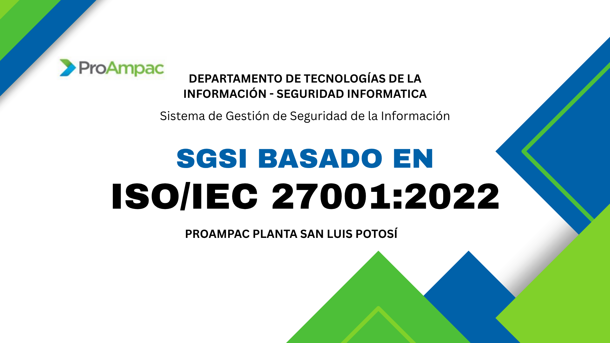
Diapositiva 1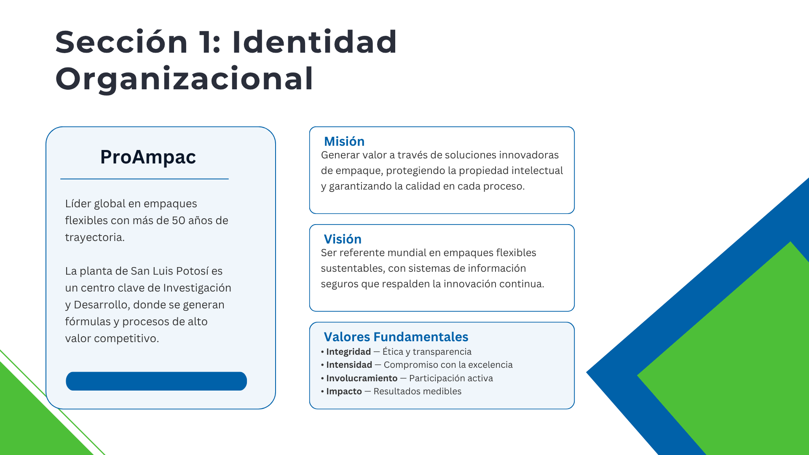
Diapositiva 2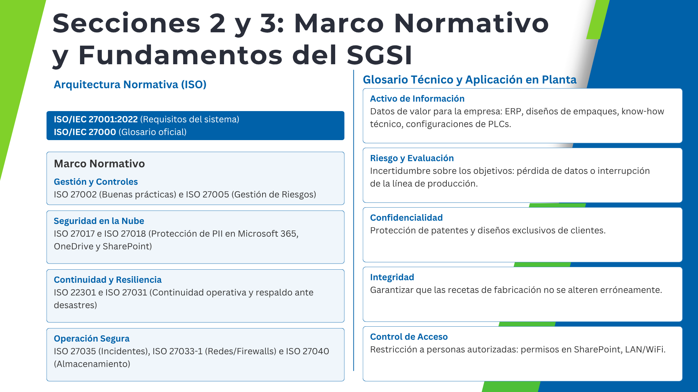
Diapositiva 3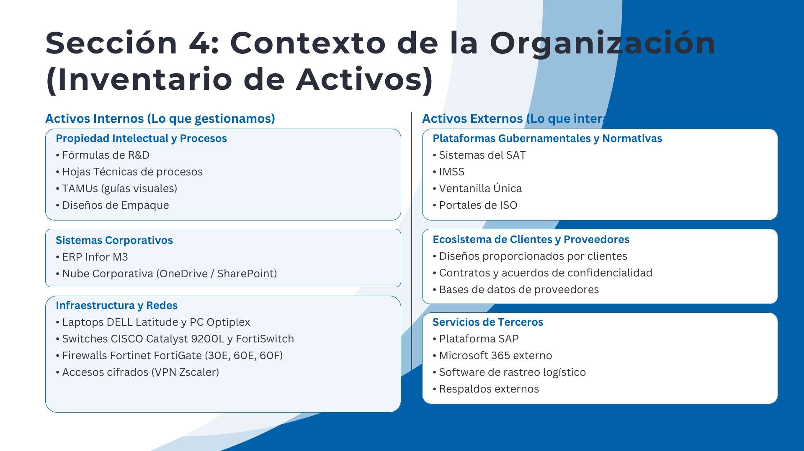
Diapositiva 4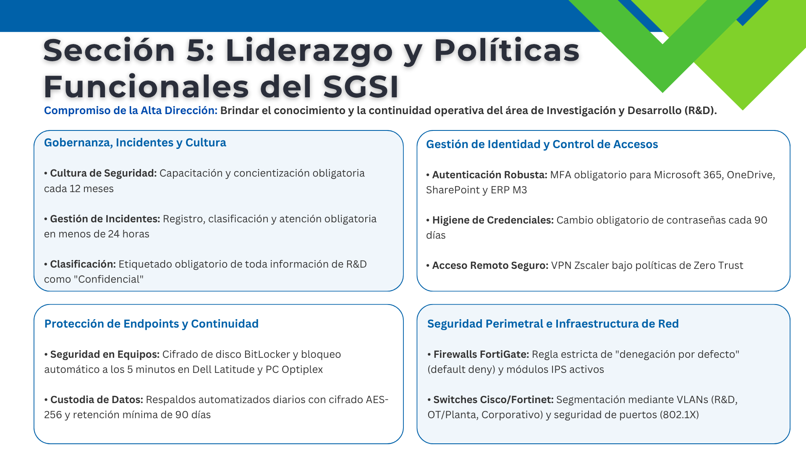
Diapositiva 5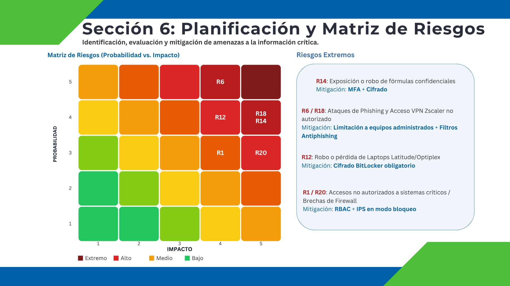
Diapositiva 68. Operación · Gestión de acceso
Estándar: definir y gestionar los accesos de todos los usuarios autorizados. Directriz: auditorías periódicas de permisos. Procedimiento: solicitar y aprobar nuevos accesos. Línea base: cambio de contraseñas cada 90 días.
8.1 Planeación
Definir controles de acceso, reducir accesos no autorizados, identificar sistemas y usuarios, roles, permisos, contraseñas seguras, MFA, RBAC, monitoreo y auditoría.
8.2 Acción
Configurar RBAC en ERP M3, SharePoint, OneDrive y VPN Zscaler; implementar MFA, políticas de contraseñas y procesos de alta, modificación y baja.
8.3 Verificación
Auditar cuentas activas, revisar logs, validar MFA y contraseñas, monitorear accesos remotos y actividad sospechosa.
8.4 Actuación
Revocar accesos innecesarios, actualizar procedimientos, ajustar privilegios, fortalecer RBAC y MFA, y mejorar monitoreo y auditoría.
Evidencia documental
Se integran políticas corporativas de IT: uso y administración de celulares corporativos, uso y administración de equipo de cómputo y estándar corporativo de contraseñas.
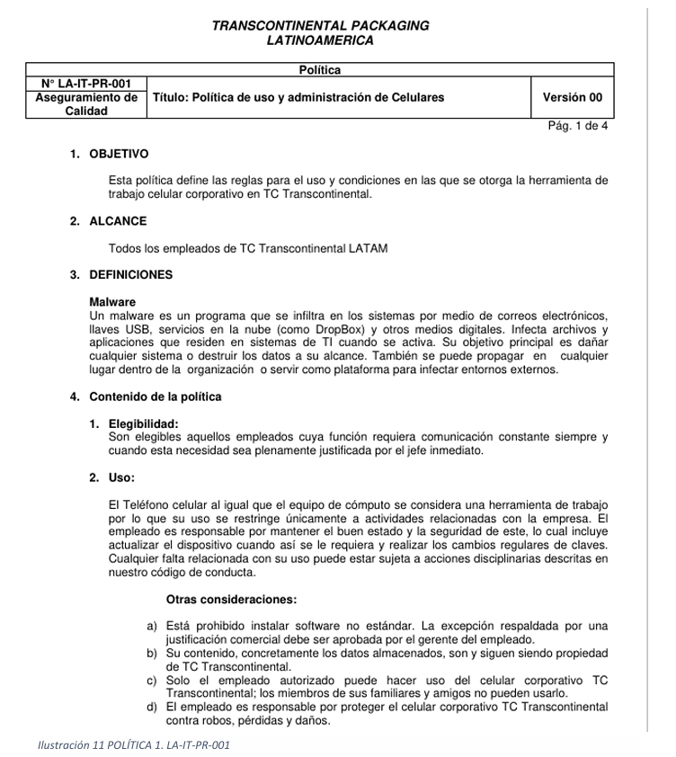
9. Evaluación de desempeño
| ID | Aspecto a evaluar | Área | Rol responsable | Responsabilidad específica | Estado | Observaciones |
|---|---|---|---|---|---|---|
| 1 | Política de Seguridad: ¿Es conocida y aplicada en la planta? | Dirección | Director General | Asegurar que la política guíe decisiones operativas. | Cumple | La política está publicada y comprendida por líderes de área. |
| 2 | Inventario de Activos: ¿Se tiene control de hardware y software? | TI | Administrador de IT Site | Mantener actualizado registro de laptops y servidores. | Cumple | El inventario coincide con existencias físicas Dell y Cisco. |
| 3 | Uso Admisible: ¿El personal conoce reglas de uso de equipos? | TI | Administrador de IT Site | Difundir normas de navegación y uso de herramientas. | En Proceso | Falta reforzar la capacitación. |
| 4 | Seguridad en RH: ¿Se evalúa al personal antes de contratar? | Recursos Humanos | Coordinador de RH | Validar antecedentes y referencias. | Cumple | Se verificó aplicación de filtros de seguridad. |
| 5 | Término de Relación: ¿Se cortan accesos al salir un empleado? | RH / TI | Coord. RH / Adm. de IT | Revocar permisos y recoger activos. | Cumple | Baja asegura deshabilitación inmediata en Active Directory. |
| 6 | Perímetro Físico: ¿Están protegidas áreas críticas? | EHS / Seguridad | Jefe de Salud y Seguridad | Gestionar acceso físico con tarjetas o bitácoras. | Cumple | R&D y Site con control de acceso 24/7. |
| 7 | Protección de Equipos: ¿Hay protección contra fallas eléctricas? | Mantenimiento | Jefe de Mantenimiento | Supervisar UPS y plantas. | En Proceso | Se requiere prueba de carga en planta de emergencia. |
| 8 | Control de Acceso: ¿Se revisan permisos periódicamente? | TI | Administrador de IT Site | Limitar acceso por mínimo privilegio. | Cumple | Depuración semestral de usuarios en ERP y carpetas. |
| 9 | Autenticación: ¿Se utiliza MFA en accesos remotos? | TI | Administrador de IT Site | Implementar y validar MFA en VPN y nube. | Cumple | Zscaler requiere validación por dispositivo móvil. |
| 10 | Vulnerabilidades: ¿Se aplican parches a tiempo? | TI | Administrador de IT Site | Monitorear y corregir fallos técnicos. | En Proceso | Servidores con actualizaciones pendientes críticas. |
| 11 | Seguridad en Redes: ¿Está segmentada producción y oficina? | TI | Administrador de IT Site | Configurar firewalls para aislar tráfico R&D. | Cumple | Fortinet mantiene reglas activas y monitoreadas. |
| 12 | Monitoreo: ¿Se detectan intentos de intrusión o anomalías? | TI | Administrador de IT Site | Analizar logs para detectar amenazas. | Cumple | Alertas reportaron bloqueos preventivos de IP sospechosas. |
| 13 | Propiedad Intelectual: ¿Se protegen fórmulas y diseños? | Calidad / R&D | Coordinador de Calidad | Resguardar confidencialidad de procesos de empaque. | Cumple | Documentación crítica de R&D cifrada y restringida. |
| 14 | Continuidad: ¿Se han probado respaldos? | TI | Administrador de IT Site | Garantizar recuperación ante desastres. | Cumple | Restauración de servidor M3 exitosa en 4 horas. |
| 15 | Incidentes: ¿Se reportan y analizan fallas? | Mejora Continua | Gte. Jr. de Mejora Continua | Documentar causa raíz y acciones correctivas. | En Proceso | Nuevo formato de reporte rápido para planta. |
| 16 | Cumplimiento Legal: ¿Se respeta privacidad de datos? | Legal / RH | Coordinador de RH | Cumplir LFPDPPP. | Cumple | Avisos de privacidad actualizados y visibles. |
| 17 | Concientización: ¿El personal recibe charlas? | Recursos Humanos | Coordinador de RH | Programar capacitaciones sobre phishing y riesgos. | Cumple | 95% del personal administrativo completó curso anual. |
| 18 | Revisión por Dirección: ¿Se evalúan resultados SGSI? | Operaciones | Gerente de Operaciones | Revisar desempeño y asignar presupuesto. | Cumple | Gerencia aprobó inversión para renovar firewalls. |
10. Mejora
10.1 Política vulnerada
Gestión de acceso: definición y administración de accesos, auditorías periódicas, proceso formal de solicitud/aprobación y cambio de contraseña cada 90 días.
10.2 Riesgo asociado
Accesos no autorizados a sistemas críticos. Probabilidad media, impacto crítico, riesgo alto. Mitigación: RBAC, MFA, auditorías periódicas y revocación inmediata.
10.3 Amenaza materializada
Uso indebido de credenciales corporativas: un usuario compartió acceso y la contraseña estaba escrita en un post-it bajo el escritorio; un tercero usó privilegios elevados.
10.4 Análisis de los hechos
Ocurrió una compartición indebida de credenciales, uso de cuenta con privilegios para recursos no autorizados y una mala práctica crítica por contraseña visible físicamente. Hubo uso indebido de privilegios, pérdida de trazabilidad, exposición potencial de información, riesgo de fuga, incumplimiento de políticas e incremento de accesos no autorizados.
| Hora | Evento |
|---|---|
| 08:10 AM | Usuario comparte acceso a su estación de trabajo |
| 08:15 AM | Credenciales son utilizadas por un tercero |
| 09:05 AM | Se detecta navegación en sitios restringidos |
| 09:20 AM | IT identifica actividad anómala en logs |
| 09:35 AM | Se rastrea tráfico y actividad |
| 10:00 AM | Contraseña comprometida es restablecida |
| 10:20 AM | Se deshabilitan sesiones activas |
| 11:00 AM | Se levanta acta administrativa |
| 12:00 PM | Se inicia campaña de concientización |
Causa raíz
- Compartición indebida de cuentas corporativas.
- Falta de concientización sobre riesgos.
- Manejo inseguro de contraseñas.
- Ausencia de supervisión inmediata.
- Dependencia excesiva de controles técnicos sin reforzar controles humanos.
Medidas adoptadas y eficacia
- Restablecimiento de credenciales.
- Refuerzo de políticas de contraseñas.
- Prohibición formal de compartir cuentas.
- MFA obligatorio.
- Capacitación extraordinaria y auditoría de privilegios.
- Mayor monitoreo de cuentas privilegiadas.
Posteriormente no se detectaron nuevos incidentes, aumentó el uso de MFA, mejoró la cultura de seguridad y se redujo la presencia de contraseñas visibles.
10.5 Campaña de prevención - Acceso no autorizado a sistemas críticos
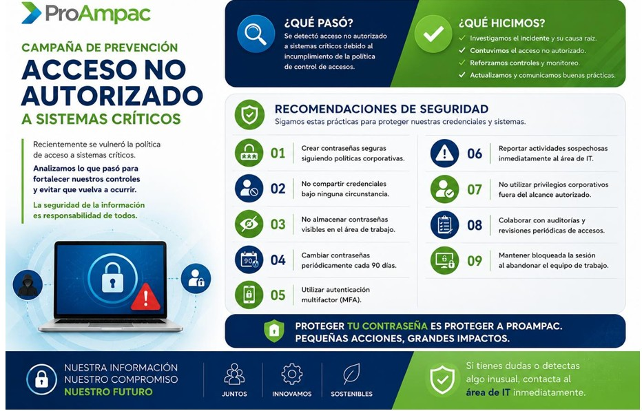
Recomendaciones de seguridad
- Crear contraseñas seguras siguiendo políticas corporativas.
- No compartir credenciales bajo ninguna circunstancia.
- No almacenar contraseñas visibles en el área de trabajo.
- Cambiar contraseñas periódicamente cada 90 días.
- Utilizar autenticación multifactorial (MFA).
- Reportar actividades sospechosas inmediatamente al área de IT.
- No utilizar privilegios corporativos fuera del alcance autorizado.
- Colaborar con auditorías y revisiones periódicas de accesos.
- Mantener bloqueada la sesión al abandonar el equipo de trabajo.